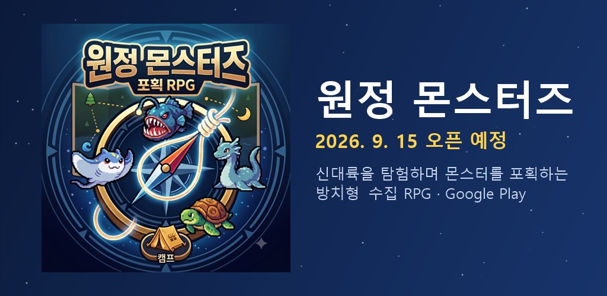

🔧 개발 진행 중 · 2026년 9월 15일 오픈 예정
몬스터 포획 방치 RPG신대륙의 야생 몬스터를 포획해
나만의 원정대를 꾸려 보세요
대항해시대 끝자락, 지도 밖에서 발견된 신대륙 ‘뉴 월드’. 탐험단의 단장이 되어 몬스터를 포획하고 길들여 더 깊은 미답지로 원정을 보냅니다. 하루 몇 번, 한 번에 1~3분이면 충분해요.
🧭 방치형 × 수집 × 편성 퍼즐
📱 Google Play (안드로이드)
🇰🇷 한글
▶Google Play9월 15일 오픈 예정
지금은 비공개 테스트 중이라 일반 사용자는 아직 설치할 수 없어요. 오픈 일정은 바뀔 수 있습니다.

놀이 방법
편성해서 보내고, 기다리고, 일지를 열어 보는 게 전부예요.
1편성몬스터 3~5마리를 고릅니다. 속성 상성과 종족 시너지, 유물 조합이 곧 전략이에요.
2파견지역과 길이를 정해 보냅니다. 15분 정찰부터 8시간 원정까지, 난이도도 고를 수 있어요.
3방치앱을 닫아도 원정은 진행돼요. 도중에 갈림길 이벤트가 오면 선택만 하면 됩니다.
4귀환과 일지돌아오면 원정 일지를 읽어요. 어디서 누굴 만났고 무엇을 잡았는지 타임라인으로 남습니다.
5성장과 해금포획한 몬스터를 도감에 올리고, 레벨업·각성·유물 강화로 더 깊은 지역을 엽니다.
이런 게임이에요
전투를 지켜보는 게임이 아니라, 누구를 어디로 보낼지 고민하는 게임입니다.
🧩
편성 화면이 메인
어느 지역에 누구를, 어떤 유물을 들려 보낼까. 매 파견마다 의미 있는 선택이 있어요.
📖
도감이 엔드 콘텐츠
목격 → 포획 → 각성 3단계로 기록되고, 도감 진척이 영구 버프와 지역 해금으로 돌아와요.
🗺️
네 권역, 열두 지역
권역마다 다른 몬스터와 재료. 깊은 곳에는 전설 몬스터가 기다립니다.
💎
유물 파밍
원정에서 발굴한 유물을 강화·분해하고 세트 효과를 맞춰 원정대를 완성해요.
🔔
귀환 알림
원정대가 돌아오면 알림이 와요. 밤에는 조용히, 낮에 다시.
🎲
같은 입력, 같은 결과
모든 판정이 결정론이라 운에 속을 일이 없어요. 뽑기 확률과 등장 지역은 게임 안에 그대로 공개됩니다.
알아 두세요
오픈 전이라 바뀔 수 있는 내용은 그때 다시 안내할게요.
🔧
지금은 비공개 테스트 중2026년 9월 15일 Google Play 오픈을 목표로 다듬고 있어요. 일정은 바뀔 수 있습니다.
🆓
무료 + 광고 + 다이아 상품무료로 즐길 수 있고 광고가 포함됩니다. 뽑기와 편의 기능에 쓰는 다이아는 인앱 결제로 살 수 있어요.
👤
구글 계정으로 로그인진행 상황을 서버에 보관해 기기를 바꿔도 이어서 할 수 있어요.
🎁
쿠폰오픈 기념 쿠폰을 준비하고 있어요. 자세한 건 오픈 때 알려드릴게요.